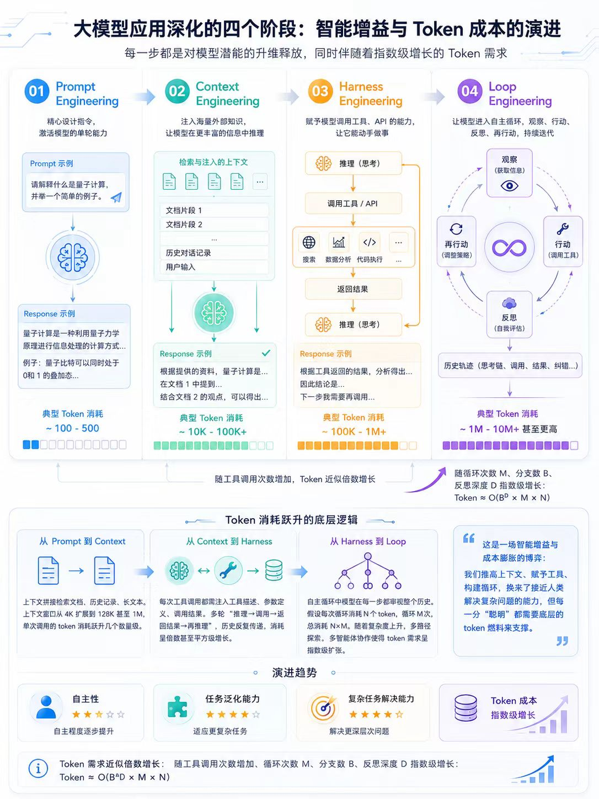

AI Engineering · 智能工程的四次升维
2025 编排式工作流（Prompt Context） 2026 Agent Runtime（Harness Loop）—— 大模型应用的深化路径

▸ 进化路径
提示工程
单条提示，一问一答。模型能力的最浅层释放，几百 token 即可完成一次交互。
~10² tokens
上下文工程
拼接文档、历史与长文本，窗口从 4K 猛增至 128K 乃至 1M，单次消耗跃升几个数量级。
~10⁴ tokens
范式跃迁
工具编排
任务外包给工具，但每次调用都将工具描述、参数与结果重新注入上下文，"推理调用返回再推理"循环往复。
~10⁵ tokens
自主循环
模型进入自主循环，每步重审历史。嵌套探索与多智能体协作，token 按"决策树分支 × 反思深度"指数膨胀。
~10⁶+ tokens
▸ 每一次范式递进，都是对模型潜能的"升维释放"
2025 · Prompt Context
编排式工作流
从一问一答到上下文装配
单条提示也许只需几百 token，但上下文工程会拼接文档、历史与长文本，窗口从 4K 猛增至 128K 乃至 1M，单次消耗直接跃升几个数量级。
4K 128K 1M tokens
2026 · Context Harness
Agent Runtime 起步
从静态上下文到工具交互链
看似将任务外包给工具，实际每次调用都要将工具描述、参数与返回结果重新注入上下文，一个简单任务就会产生"推理 调用 返回 再推理"的多次交互，整个对话历史被反复传递，token 消耗成倍甚至平方级增长。
对话历史反复传递 · 平方级增长
2026 · Harness Loop
Agent Runtime 深化
从工具调用到自主决策循环
模型进入自主循环，每一步都重审历史。随着嵌套探索与多智能体协作，token 需求按"决策树分支 × 反思深度"指数膨胀，通往更高自主性的代价是指数级增长的 token 消耗。
决策树分支 × 反思深度
Token 消耗数量级对比（单次任务估算）
Token — 未来的算力基础设施
本质上，这是一场智能增益与成本膨胀的博弈。更高的自主性与任务泛化能力背后，是指数级增长的 token 需求，这是架构上的必然。
Token 将成为未来的算力基础设施——像电力一样不可或缺，同时像货币一样被定价、交易，乃至成为投机标的。在 Prompt Context Harness Loop 的每一步升维中，我们获得的每一分智能，都以 token 为代价。这场博弈的终局，不在于阻止膨胀，而在于让每一枚 token 都物有所值。